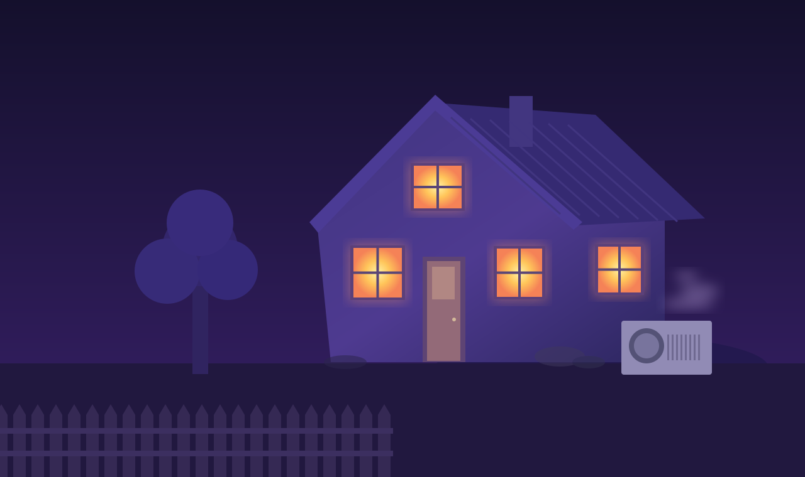
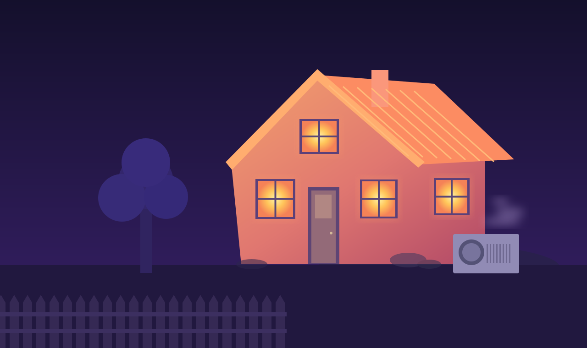

پمپ حرارتی
بررسی شرایط ساختمان و انتخاب محل نصب مناسب.


°Cدمای سطح ۳۵°Cپمپ حرارتی، لولهکشی و گرمایش؛ از بازدید اولیه تا راهاندازی کنار تو هستیم.
درخواست بازدیدبررسی شرایط ساختمان و انتخاب محل نصب مناسب.
بازطراحی مسیر آب و بهروزرسانی تجهیزات حمام.
بازبینی راهاندازی، نشتی و کارکرد سامانهٔ موجود.
نیاز گرمایی و محدودیتهای فضا بررسی میشود.
راهکار مناسب با نقشهٔ ساختمان هماهنگ میشود.
تجهیزات و مدار آب در جای خود قرار میگیرند.
پس از آزمون، شیوهٔ تنظیم سامانه توضیح داده میشود.
مرز تصویر را با لمس، ماوس یا کلیدهای جهت جابهجا کن.

از واحد بیرونی تا آخرین اتاق، مسیر گردش آب را دنبال کن. نقشهٔ مدار نشان میدهد گرما کجا تولید میشود و چطور به خانه میرسد.
برای بازدید، مساحت خانه و عکس تأسیسات فعلی را همراه داشته باش. انتخاب محل نصب و تنظیم مدار را در همان دیدار بررسی میکنیم.



ابتدا نوع ساختمان و سامانهٔ فعلی را در درخواست بازدید مینویسی.
این نما یک تصویرسازی مقایسهای است؛ برای ارزیابی ساختمان به بازدید نیاز است.
جزئیاتت را وارد کن و خلاصهٔ درخواست را برای خودت بگیر.
 انتخاب این قالب
انتخاب این قالب